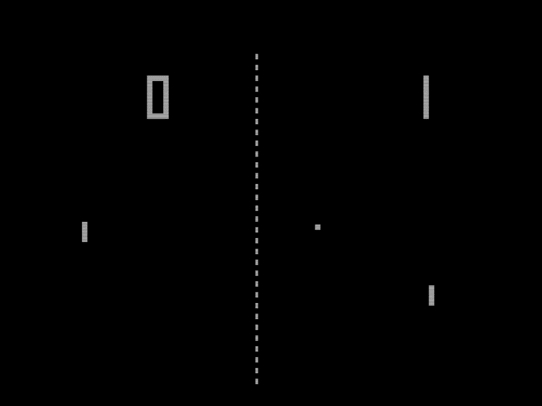

Приклади

Перший ІШІ
Перші відеоігри, розроблені в 1960-х і початку 1970-х років, такі як Spacewar!, Pong і Gotcha (1973), були іграми, побудованими на дискретній логіці й строго орієнтованими на змагання (бої) двох гравців без ШІ.Ігри, у яких був присутній одиночний (синглплеєрний) режим і комп'ютерні суперники, почали з'являтися в 1970-х роках. Першими помітними іграми були аркади Qwak (полювання на качок) і Pursuit (симулятор бійки). Дві текстові відеоігри 1972 року випуску, полювання на Вампуса (англ. Hunt the Wumpus) і Star Trek[en], також надавали комп'ютерних суперників. Рух ворогів був заснований на заздалегідь збережених шаблонах.

Прорив у 2005році
Значимий внесок у розвиток ігрового ШІ привніс шутер від першої особи F.E.A.R., випущений компанією Monolith Productions у 2005 році. На свій час він містив дуже «просунутий» ШІ, що був зустрінутий дуже позитивно всіма ігровими рецензентами й аналітиками. Бої в грі відбуваються в закритих приміщеннях; боти працюють у команді, використовують середовище як укриття, застосовують до гравця різні тактики залежно від ситуації, штурмують, відходять, викликають підкріплення, використовують гранати для «викурювання» гравця, адекватно реагують на гранати, кинуті гравцем
Компанія NVIDIA протягом довгого часу залишається справжнім «двигуном прогресу» в розробці графічних рішень. Її відеокарти залишаються досі одними з найкращих рішень на ринку. Але до нескінченності «нарощувати гігабайти відеопам’яті» не вийде і індустрії необхідні свіжі ідеї. І саме це готова дати світові NVIDIA зі своєю новою технологією, завдяки якій за обробку 3D-графіки може здійснювати не графічний процесор, а просунута система штучного інтелекту.Як повідомляє прес-служба компанії, NVIDIA створила ШІ-алгоритм, який створює віртуальні об’єкти на основі реальних відеороликів, але на відміну від більшості схожих рішень він працює не з окремими кадрами, а з усім відеопотоком відразу. За словами компанії:«ШІ дозволить розробникам і художникам створювати нові інтерактивні тривимірні віртуальні світи для автомобільної, ігрової індустрії і для проектів у віртуальній реальності, просто навчаючись на відео з реального світу. Це знизить вартість і час розробки. Нейронні мережі, а зокрема генеративні моделі, змінять спосіб створення графіки.»Для демонстрації технології дослідницька група розробила просту гоночну гру на движку Unreal Engine 4, яка дозволяє гравцям переміщатися по інтерактивному середовищу, що генерується штучним інтелектом. Нейромережа оперує високорівневими описами сцен, наприклад картами сегментації, які описують характеристику об’єктів, а також те, де вони знаходяться. На підставі цього ШІ «розуміє», що містить певна частина зображення автомобіль або будинок, а також їх межі та властивості. Потім мережа наповнює сцену деталями, які дізналася з вихідних даних і ряду реальних відеороликів.